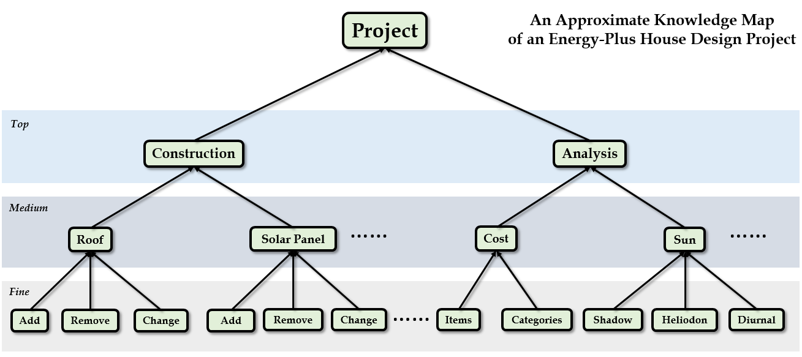

By Charles Xie, The Intelligent Learning Technology Laboratory, The Concord Consortium
Visual Process Analytics (VPA) combines process analytics and visual analytics to provide a powerful lens through which complex learning dynamics can be studied and assessed. VPA focuses on "microscopic" learning in the problem space through important science and engineering practices such as scientific inquiry and engineering design. It uses fine-grained, dynamic student data collected by learning technologies behind the scenes while students are working with them.
Knowledge map
A time series plot must define a granularity parameter to specify the time interval to which the value around that time is represented or calculated. For instance, if there are three actions in the first five seconds and six actions in the second five seconds, a plot with an granular interval of five seconds will show two points, one has the value of three and the other has the value of six. But a plot with a granular interval of ten seconds will show only one point that has the value of nine. A time series plot has the following modes:
A scatter plot shows and compares the occurrences of a set of events. The x-axis represents time. The y-axis represents actions. If an action occurs at a given time, a circle is drawn at the corresponding location. If the circles are too close, they can be combined into large circles with the size representing their sum.
Any sequence of actions can be considered as a directional graph consisting of a set of nodes connected by arrows. Each node represents a task and each arrow represents a transition of task.
Linkography is a method for the notation and analysis of the design process. It attempts to study how designers generate, test, and evaluate ideas. Linkographs are visual forms to show this process.
A heat map can be used to visualize and compare the frequencies of transitions between different pairs of tasks.
A radar chart can be used to visualize high-dimensional data sets. This is a 2D visualization of N-dimensional data. Each radiating line represents an axis.
Under construction...
Process data always have a time dimension, which allows them to be animated to create a dynamic picture that may enhance our perception about their temporal nature.
Iterative algorithms are progressive, though the index of each iteration often has no association with time. Animating iterations in an algorithm may provide a visual hint to rapidly check if the analysis is converging to good results or diverging to something wrong.
In a high-dimensional space, each learning state can be represented by a vector. There are multiple types of vector, each measuring a specific aspect of learning.
A dot product of two state vectors can be used to measure the similarity of the two states.
An autocorrelation function of a variable in the learner data indicates the repetitiveness of the learner's behavior over time.
A cross-correlation function between two variables in the learner data indicates how they influence each other over time.
If one of the correlated parties in a cross-correlation relationship is regarded as a stimulus or an intervention, the changes of other types of action following it define the learner's response to it. The response function characterizes this.
A perspective is a state of data mining. Data mining is usually a time-consuming process that involves setting parameters and choosing configurations for the mined data sets. A data set becomes a state machine as it exhibits certain properties when a proper set of parameters and configurations is applied.
The development of VPA is funded by the National Science Foundation under grants #1124281, #1348530, and #1503196. Any opinions, findings, and conclusions or recommendations expressed in the materials associated with this program are those of the author(s) and do not necessarily reflect the views of the National Science Foundation, however.